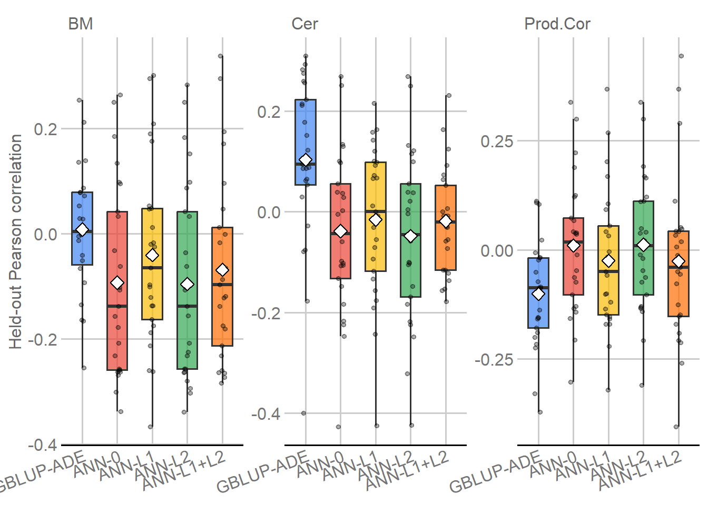
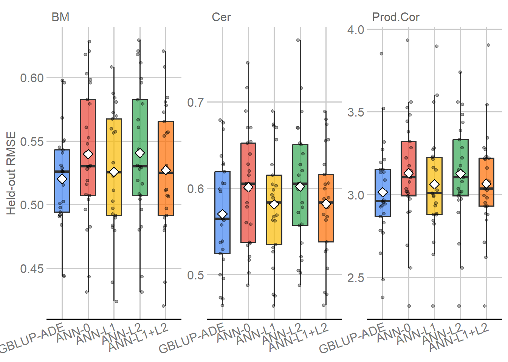

Last updated: 2026-11-09
Checks: 7 0
Knit directory:
Genomic-Prediction-using-Regularized-Artificial-Neural-Networks/
This reproducible R Markdown analysis was created with workflowr (version 1.7.2). The Checks tab describes the reproducibility checks that were applied when the results were created. The Past versions tab lists the development history.
Great! Since the R Markdown file has been committed to the Git repository, you know the exact version of the code that produced these results.
Great job! The global environment was empty. Objects defined in the global environment can affect the analysis in your R Markdown file in unknown ways. For reproduciblity it’s best to always run the code in an empty environment.
The command set.seed(20260821) was run prior to running
the code in the R Markdown file. Setting a seed ensures that any results
that rely on randomness, e.g. subsampling or permutations, are
reproducible.
Great job! Recording the operating system, R version, and package versions is critical for reproducibility.
Nice! There were no cached chunks for this analysis, so you can be confident that you successfully produced the results during this run.
Great job! Using relative paths to the files within your workflowr project makes it easier to run your code on other machines.
Great! You are using Git for version control. Tracking code development and connecting the code version to the results is critical for reproducibility.
The results in this page were generated with repository version d16aa18. See the Past versions tab to see a history of the changes made to the R Markdown and HTML files.
Note that you need to be careful to ensure that all relevant files for
the analysis have been committed to Git prior to generating the results
(you can use wflow_publish or
wflow_git_commit). workflowr only checks the R Markdown
file, but you know if there are other scripts or data files that it
depends on. Below is the status of the Git repository when the results
were generated:
Ignored files:
Ignored: .Rhistory
Ignored: .Rproj.user/
Ignored: .github/
Ignored: .local/
Ignored: code/legacy/
Ignored: data/dados_reais/Fenótipos 2014_2015_2016_C.arabica (1).xlsx
Ignored: data/dados_reais/Fenótipos 2014_2015_2016_C.arabica.xlsx
Ignored: data/dados_reais/FiltStep1_minQ10.0_minDP3_DPrange15-maxMeanDepth750_miss0.4_maf0.01_mac1_EMB_291701_SNPs_Raw.vcf.012.012
Ignored: data/dados_reais/FiltStep1_minQ10.0_minDP3_DPrange15-maxMeanDepth750_miss0.4_maf0.01_mac1_EMB_291701_SNPs_Raw.vcf.012.012.indv
Ignored: data/dados_reais/FiltStep1_minQ10.0_minDP3_DPrange15-maxMeanDepth750_miss0.4_maf0.01_mac1_EMB_291701_SNPs_Raw.vcf.012.012.pos
Ignored: data/dados_reais/FiltStep1_minQ10_minDP3_DPrange15-750_miss0.4_maf0.01_mac1_EMB_291701_filt1_snps_RAW.012.indv.txt
Ignored: data/dados_reais/FiltStep1_minQ10_minDP3_DPrange15-750_miss0.4_maf0.01_mac1_EMB_291701_filt1_snps_RAW.012.pos.txt
Ignored: data/dados_reais/FiltStep1_minQ10_minDP3_DPrange15-750_miss0.4_maf0.01_mac1_EMB_291701_filt1_snps_RAW.012.txt
Ignored: data/dados_reais/Rótulos C. arabica_Proj_Piloto.xlsx
Ignored: data/dados_reais/Rótulos Novos SNPs.xls
Ignored: data/dados_reais/dados_cafe.xlsx
Ignored: data/dados_reais/fpls-09-01934.pdf
Ignored: data/dados_reais/geno_real.rds
Ignored: data/dados_reais/pheno_real.rds
Ignored: data/dados_reais/plants-13-01876-v2.pdf
Ignored: data/dados_reais/pos_geno_real.rds
Ignored: renv/library/
Ignored: renv/staging/
Note that any generated files, e.g. HTML, png, CSS, etc., are not included in this status report because it is ok for generated content to have uncommitted changes.
These are the previous versions of the repository in which changes were
made to the R Markdown (analysis/real_data_comparison.Rmd)
and HTML (docs/real_data_comparison.html) files. If you’ve
configured a remote Git repository (see ?wflow_git_remote),
click on the hyperlinks in the table below to view the files as they
were in that past version.
| File | Version | Author | Date | Message |
|---|---|---|---|---|
| Rmd | d16aa18 | WevertonGomesCosta | 2026-11-09 | Add real-data ANN and model comparison workflows |
This module closes the real-data modeling workflow by comparing GBLUP-ADE with the four regularized ANN variants on exactly the same outer-assessment individuals defined by the frozen real-data validation design.
Only previously saved model outputs are read here. No model is refitted, no hyperparameter is selected, and no held-out prediction is modified.
Three principles define the comparison:
Trait x outer split tasks;Because BM, Cer, and Prod.Cor are on different scales, RMSE and MAE are compared within trait and are not averaged across traits.
library(knitr)
library(ggplot2)
library(ggthemes)
GBLUP_RESULTS_RDS <-
"output/real/gblup/real_gblup_ade_results.rds"
GBLUP_PREDICTIONS_RDS <-
"output/real/gblup/real_gblup_ade_predictions.rds"
ANN_RESULTS_RDS <-
"output/real/ann/final/real_ann_results.rds"
ANN_PREDICTIONS_RDS <-
"output/real/ann/final/real_ann_predictions.rds"
required_files <- c(
GBLUP_RESULTS_RDS,
GBLUP_PREDICTIONS_RDS,
ANN_RESULTS_RDS,
ANN_PREDICTIONS_RDS
)
stopifnot(all(file.exists(required_files)))
gr <- readRDS(GBLUP_RESULTS_RDS)
gp <- readRDS(GBLUP_PREDICTIONS_RDS)
ar <- readRDS(ANN_RESULTS_RDS)
ap <- readRDS(ANN_PREDICTIONS_RDS)
expected_ann_models <- c(
"ANN_0",
"ANN_L1",
"ANN_L2",
"ANN_L1_L2"
)
model_order <- c(
"GBLUP_ADE",
expected_ann_models
)
expected_traits <- c(
"Prod.Cor",
"Cer",
"BM"
)
stopifnot(
nrow(gr) == 75L,
nrow(gp) == 2925L,
nrow(ar) == 300L,
nrow(ap) == 11700L,
length(unique(gr$TaskID)) == 75L,
length(unique(ar$TaskID)) == 75L,
all(gr$Status == "ok"),
all(ar$Status == "ok"),
all(is.finite(gp$Predicted_Value)),
all(is.finite(ap$Predicted_Value)),
identical(
sort(unique(gr$Trait)),
sort(expected_traits)
),
identical(
sort(unique(ar$Trait)),
sort(expected_traits)
),
identical(
sort(unique(ar$Model)),
sort(expected_ann_models)
)
)
input_summary <- data.frame(
Object = c(
"GBLUP-ADE task results",
"GBLUP-ADE held-out predictions",
"ANN task-by-model results",
"ANN held-out predictions"
),
Rows = c(
nrow(gr),
nrow(gp),
nrow(ar),
nrow(ap)
),
stringsAsFactors = FALSE
)
input_summary |>
knitr::kable(
format = "html",
caption = "Frozen model outputs entering the real-data comparison",
row.names = FALSE,
table.attr = 'class="table table-striped table-hover table-bordered"'
)| Object | Rows |
|---|---|
| GBLUP-ADE task results | 75 |
| GBLUP-ADE held-out predictions | 2925 |
| ANN task-by-model results | 300 |
| ANN held-out predictions | 11700 |
model_structure_rows <- vector(
"list",
length(model_order)
)
for (model_index in seq_along(model_order)) {
model <- model_order[model_index]
if (model == "GBLUP_ADE") {
result_data <- gr
prediction_data <- gp
} else {
result_data <- ar[
ar$Model == model,
,
drop = FALSE
]
prediction_data <- ap[
ap$Model == model,
,
drop = FALSE
]
}
predictions_per_task <- as.integer(
table(prediction_data$TaskID)
)
model_structure_rows[[model_index]] <- data.frame(
Model = model,
Tasks = length(unique(result_data$TaskID)),
Predictions = nrow(prediction_data),
Min_predictions_per_task = min(predictions_per_task),
Max_predictions_per_task = max(predictions_per_task),
stringsAsFactors = FALSE
)
}
model_structure <- do.call(
rbind,
model_structure_rows
)
rownames(model_structure) <- NULL
stopifnot(
all(model_structure$Tasks == 75L),
model_structure$Predictions[
model_structure$Model == "GBLUP_ADE"
] == 2925L,
all(
model_structure$Predictions[
model_structure$Model != "GBLUP_ADE"
] == 2925L
),
all(model_structure$Min_predictions_per_task == 39L),
all(model_structure$Max_predictions_per_task == 39L)
)
model_structure |>
knitr::kable(
format = "html",
caption = "Observed task and held-out prediction structure by model",
row.names = FALSE,
table.attr = 'class="table table-striped table-hover table-bordered"'
)| Model | Tasks | Predictions | Min_predictions_per_task | Max_predictions_per_task |
|---|---|---|---|---|
| GBLUP_ADE | 75 | 2925 | 39 | 39 |
| ANN_0 | 75 | 2925 | 39 | 39 |
| ANN_L1 | 75 | 2925 | 39 | 39 |
| ANN_L2 | 75 | 2925 | 39 | 39 |
| ANN_L1_L2 | 75 | 2925 | 39 | 39 |
Predictions are aligned by trait, repetition, outer fold, split identifier, task identifier, and individual identifier.
comparison_keys <- c(
"Trait",
"Repetition",
"Fold",
"SplitID",
"TaskID",
"ID"
)
g_targets <- gp[
, c(
comparison_keys,
"Family",
"Observed_Phenotype"
)
]
paired_targets <- merge(
g_targets,
ap[
, c(
comparison_keys,
"Model",
"Family",
"Observed_Phenotype"
)
],
by = comparison_keys,
suffixes = c("_GBLUP", "_ANN"),
sort = FALSE
)
paired_targets$Phenotype_difference <- abs(
paired_targets$Observed_Phenotype_GBLUP -
paired_targets$Observed_Phenotype_ANN
)
paired_targets$Family_match <-
paired_targets$Family_GBLUP ==
paired_targets$Family_ANN
target_match <- aggregate(
Phenotype_difference ~ Model,
data = paired_targets,
FUN = max
)
family_match <- aggregate(
Family_match ~ Model,
data = paired_targets,
FUN = all
)
target_match <- merge(
target_match,
family_match,
by = "Model",
sort = FALSE
)
stopifnot(
nrow(paired_targets) == 11700L,
all(target_match$Phenotype_difference < 1e-12),
all(target_match$Family_match)
)
target_match |>
knitr::kable(
format = "html",
digits = 12,
caption = "Exact held-out target and family matching relative to GBLUP-ADE",
row.names = FALSE,
table.attr = 'class="table table-striped table-hover table-bordered"'
)| Model | Phenotype_difference | Family_match |
|---|---|---|
| ANN_0 | 0 | TRUE |
| ANN_L1 | 0 | TRUE |
| ANN_L1_L2 | 0 | TRUE |
| ANN_L2 | 0 | TRUE |
Every comparison is therefore made on the same held-out phenotype for the same individual in the same outer split.
The terminal comparison uses the same task-level metrics already calculated by R06 and R07.
mean(prediction - phenotype);
values nearer zero are better.lm(phenotype ~ prediction); values nearer one indicate
better proportional calibration, but slope becomes unstable when
prediction variance is nearly zero.1 - SSE/SST; it can be
negative for held-out predictions.For paired contrasts, positive performance advantage always favors
the ANN variant. Higher-is-better metrics use ANN - GBLUP;
lower-is-better metrics use GBLUP - ANN; bias is compared
by distance from zero; slope is compared by distance from one.
analysis_cols <- c(
"Trait",
"Repetition",
"Fold",
"SplitID",
"TaskID",
"Model",
metrics
)
all_results <- rbind(
gr[, analysis_cols],
ar[, analysis_cols]
)
trait_summary <- aggregate(
all_results[, metrics],
by = list(
Trait = all_results$Trait,
Model = all_results$Model
),
FUN = mean,
na.rm = TRUE
)
trait_summary$Trait <- factor(
trait_summary$Trait,
levels = expected_traits
)
trait_summary$Model <- factor(
trait_summary$Model,
levels = model_order
)
trait_summary <- trait_summary[
order(
trait_summary$Trait,
trait_summary$Model
),
,
drop = FALSE
]
trait_summary$Trait <- as.character(
trait_summary$Trait
)
trait_summary$Model <- as.character(
trait_summary$Model
)
trait_display <- trait_summary[
, c(
"Trait",
"Model",
"Phenotype_Correlation",
"Phenotype_RMSE",
"Phenotype_MAE",
"Phenotype_R2"
)
]
trait_display |>
knitr::kable(
format = "html",
digits = 4,
caption = "Mean held-out performance by trait and model",
row.names = FALSE,
table.attr = 'class="table table-striped table-hover table-bordered"'
)| Trait | Model | Phenotype_Correlation | Phenotype_RMSE | Phenotype_MAE | Phenotype_R2 |
|---|---|---|---|---|---|
| Prod.Cor | GBLUP_ADE | -0.1008 | 3.0145 | 2.3396 | -0.0440 |
| Prod.Cor | ANN_0 | 0.0099 | 3.1289 | 2.4318 | -0.1276 |
| Prod.Cor | ANN_L1 | -0.0248 | 3.0620 | 2.3903 | -0.0789 |
| Prod.Cor | ANN_L2 | 0.0117 | 3.1258 | 2.4349 | -0.1268 |
| Prod.Cor | ANN_L1_L2 | -0.0262 | 3.0662 | 2.3938 | -0.0831 |
| Cer | GBLUP_ADE | 0.1032 | 0.5701 | 0.4674 | -0.0233 |
| Cer | ANN_0 | -0.0382 | 0.6011 | 0.4890 | -0.1529 |
| Cer | ANN_L1 | -0.0157 | 0.5814 | 0.4774 | -0.0692 |
| Cer | ANN_L2 | -0.0482 | 0.6019 | 0.4896 | -0.1543 |
| Cer | ANN_L1_L2 | -0.0185 | 0.5819 | 0.4766 | -0.0710 |
| BM | GBLUP_ADE | 0.0081 | 0.5202 | 0.4177 | -0.0421 |
| BM | ANN_0 | -0.0929 | 0.5398 | 0.4425 | -0.1204 |
| BM | ANN_L1 | -0.0405 | 0.5257 | 0.4257 | -0.0631 |
| BM | ANN_L2 | -0.0957 | 0.5406 | 0.4438 | -0.1244 |
| BM | ANN_L1_L2 | -0.0685 | 0.5272 | 0.4278 | -0.0681 |
trait_winner_rows <- vector(
"list",
length(expected_traits)
)
for (trait_index in seq_along(expected_traits)) {
trait <- expected_traits[trait_index]
d <- trait_summary[
trait_summary$Trait == trait,
,
drop = FALSE
]
trait_winner_rows[[trait_index]] <- data.frame(
Trait = trait,
Best_correlation = d$Model[
which.max(d$Phenotype_Correlation)
],
Best_RMSE = d$Model[
which.min(d$Phenotype_RMSE)
],
Best_MAE = d$Model[
which.min(d$Phenotype_MAE)
],
Best_R2 = d$Model[
which.max(d$Phenotype_R2)
],
stringsAsFactors = FALSE
)
}
trait_winners <- do.call(
rbind,
trait_winner_rows
)
trait_winners |>
knitr::kable(
format = "html",
caption = "Best mean held-out metric by trait",
row.names = FALSE,
table.attr = 'class="table table-striped table-hover table-bordered"'
)| Trait | Best_correlation | Best_RMSE | Best_MAE | Best_R2 |
|---|---|---|---|---|
| Prod.Cor | ANN_L2 | GBLUP_ADE | GBLUP_ADE | GBLUP_ADE |
| Cer | GBLUP_ADE | GBLUP_ADE | GBLUP_ADE | GBLUP_ADE |
| BM | GBLUP_ADE | GBLUP_ADE | GBLUP_ADE | GBLUP_ADE |
gblup_rmse_wins <- sum(
trait_winners$Best_RMSE == "GBLUP_ADE"
)
gblup_r2_wins <- sum(
trait_winners$Best_R2 == "GBLUP_ADE"
)
gblup_corr_wins <- sum(
trait_winners$Best_correlation == "GBLUP_ADE"
)GBLUP-ADE has the lowest mean RMSE in 3 of 3 traits, the highest mean held-out \(R^2\) in 3 of 3, and the highest mean Pearson correlation in 2 of 3. Metric-specific winners are retained because near-zero correlations can coexist with small differences in RMSE when models shrink strongly toward the trait mean.
plot_results <- all_results
plot_results$Model <- factor(
plot_results$Model,
levels = model_order,
labels = c(
"GBLUP-ADE",
"ANN-0",
"ANN-L1",
"ANN-L2",
"ANN-L1+L2"
)
)
p_model_correlation <- ggplot(
plot_results,
aes(
x = Model,
y = Phenotype_Correlation,
fill = Model
)
) +
geom_boxplot(
width = 0.58,
outlier.shape = NA,
alpha = 0.70
) +
geom_point(
position = position_jitter(
width = 0.10,
height = 0,
seed = 20261105L + 501L
),
alpha = 0.32,
size = 1.3
) +
stat_summary(
fun = mean,
geom = "point",
shape = 23,
size = 3.2,
fill = "white"
) +
facet_wrap(
~ Trait,
scales = "free_y"
) +
scale_fill_gdocs() +
labs(
x = NULL,
y = "Held-out Pearson correlation",
fill = NULL
) +
theme_gdocs() +
theme(
legend.position = "none",
axis.text.x = element_text(
angle = 20,
hjust = 1
)
)
print(p_model_correlation)
Held-out Pearson correlation across the 25 outer splits per trait for GBLUP-ADE and the four ANN variants. White diamonds indicate model means.
p_model_rmse <- ggplot(
plot_results,
aes(
x = Model,
y = Phenotype_RMSE,
fill = Model
)
) +
geom_boxplot(
width = 0.58,
outlier.shape = NA,
alpha = 0.70
) +
geom_point(
position = position_jitter(
width = 0.10,
height = 0,
seed = 20261105L + 502L
),
alpha = 0.32,
size = 1.3
) +
stat_summary(
fun = mean,
geom = "point",
shape = 23,
size = 3.2,
fill = "white"
) +
facet_wrap(
~ Trait,
scales = "free_y"
) +
scale_fill_gdocs() +
labs(
x = NULL,
y = "Held-out RMSE",
fill = NULL
) +
theme_gdocs() +
theme(
legend.position = "none",
axis.text.x = element_text(
angle = 20,
hjust = 1
)
)
print(p_model_rmse)
Held-out RMSE across the 25 outer splits per trait for GBLUP-ADE and the four ANN variants. Lower values indicate smaller prediction error; white diamonds indicate model means.
Each ANN result is paired with the GBLUP-ADE result from the same trait, repetition, fold, split, and outer task.
task_keys <- c(
"Trait",
"Repetition",
"Fold",
"SplitID",
"TaskID"
)
g <- gr[
, c(
task_keys,
metrics
)
]
names(g)[-(1:length(task_keys))] <- paste0(
names(g)[-(1:length(task_keys))],
"_GBLUP"
)
paired_rows <- list()
paired_row_index <- 0L
for (model in expected_ann_models) {
a <- ar[
ar$Model == model,
c(
task_keys,
metrics
)
]
matched <- merge(
a,
g,
by = task_keys,
all = FALSE,
sort = FALSE
)
stopifnot(
nrow(matched) == 75L
)
for (trait in expected_traits) {
trait_data <- matched[
matched$Trait == trait,
,
drop = FALSE
]
stopifnot(
nrow(trait_data) == 25L
)
for (metric in metrics) {
ann_value <- trait_data[[metric]]
gblup_value <- trait_data[[
paste0(metric, "_GBLUP")
]]
raw_difference <- ann_value - gblup_value
if (metric %in% higher_better) {
advantage <- ann_value - gblup_value
} else if (metric %in% lower_better) {
advantage <- gblup_value - ann_value
} else if (metric %in% zero_target) {
advantage <- abs(gblup_value) - abs(ann_value)
} else {
advantage <-
abs(gblup_value - 1) -
abs(ann_value - 1)
}
paired_row_index <- paired_row_index + 1L
valid <- is.finite(ann_value) &
is.finite(gblup_value) &
is.finite(advantage)
paired_rows[[paired_row_index]] <- data.frame(
Trait = trait,
Model = model,
Metric = metric,
N_total = length(raw_difference),
N_valid = sum(valid),
N_missing = sum(!valid),
Mean_ANN = mean(ann_value, na.rm = TRUE),
Mean_GBLUP = mean(gblup_value, na.rm = TRUE),
Mean_raw_difference = mean(
raw_difference,
na.rm = TRUE
),
Median_raw_difference = median(
raw_difference,
na.rm = TRUE
),
Mean_performance_advantage = mean(
advantage,
na.rm = TRUE
),
Median_performance_advantage = median(
advantage,
na.rm = TRUE
),
ANN_better = sum(
advantage > 0,
na.rm = TRUE
),
Equal = sum(
advantage == 0,
na.rm = TRUE
),
GBLUP_better = sum(
advantage < 0,
na.rm = TRUE
),
stringsAsFactors = FALSE
)
}
}
}
paired <- do.call(
rbind,
paired_rows
)
rownames(paired) <- NULL
stopifnot(
all(
paired$N_total ==
paired$N_valid +
paired$N_missing
),
all(
paired$ANN_better +
paired$Equal +
paired$GBLUP_better ==
paired$N_valid
)
)
paired_primary <- paired[
paired$Metric %in% c(
"Phenotype_Correlation",
"Phenotype_RMSE",
"Phenotype_R2"
),
c(
"Trait",
"Model",
"Metric",
"Mean_ANN",
"Mean_GBLUP",
"Mean_performance_advantage",
"ANN_better",
"Equal",
"GBLUP_better"
)
]
paired_primary |>
knitr::kable(
format = "html",
digits = 4,
caption = "Matched ANN versus GBLUP-ADE contrasts; positive advantage favors ANN",
row.names = FALSE,
table.attr = 'class="table table-striped table-hover table-bordered"'
)| Trait | Model | Metric | Mean_ANN | Mean_GBLUP | Mean_performance_advantage | ANN_better | Equal | GBLUP_better |
|---|---|---|---|---|---|---|---|---|
| Prod.Cor | ANN_0 | Phenotype_Correlation | 0.0099 | -0.1008 | 0.1107 | 19 | 0 | 6 |
| Prod.Cor | ANN_0 | Phenotype_RMSE | 3.1289 | 3.0145 | -0.1144 | 4 | 0 | 21 |
| Prod.Cor | ANN_0 | Phenotype_R2 | -0.1276 | -0.0440 | -0.0836 | 4 | 0 | 21 |
| Cer | ANN_0 | Phenotype_Correlation | -0.0382 | 0.1032 | -0.1415 | 6 | 0 | 19 |
| Cer | ANN_0 | Phenotype_RMSE | 0.6011 | 0.5701 | -0.0310 | 4 | 0 | 21 |
| Cer | ANN_0 | Phenotype_R2 | -0.1529 | -0.0233 | -0.1296 | 4 | 0 | 21 |
| BM | ANN_0 | Phenotype_Correlation | -0.0929 | 0.0081 | -0.0995 | 7 | 0 | 16 |
| BM | ANN_0 | Phenotype_RMSE | 0.5398 | 0.5202 | -0.0195 | 9 | 0 | 16 |
| BM | ANN_0 | Phenotype_R2 | -0.1204 | -0.0421 | -0.0783 | 9 | 0 | 16 |
| Prod.Cor | ANN_L1 | Phenotype_Correlation | -0.0248 | -0.1008 | 0.0760 | 16 | 0 | 9 |
| Prod.Cor | ANN_L1 | Phenotype_RMSE | 3.0620 | 3.0145 | -0.0476 | 12 | 0 | 13 |
| Prod.Cor | ANN_L1 | Phenotype_R2 | -0.0789 | -0.0440 | -0.0349 | 12 | 0 | 13 |
| Cer | ANN_L1 | Phenotype_Correlation | -0.0157 | 0.1032 | -0.1189 | 6 | 0 | 19 |
| Cer | ANN_L1 | Phenotype_RMSE | 0.5814 | 0.5701 | -0.0113 | 8 | 0 | 17 |
| Cer | ANN_L1 | Phenotype_R2 | -0.0692 | -0.0233 | -0.0459 | 8 | 0 | 17 |
| BM | ANN_L1 | Phenotype_Correlation | -0.0405 | 0.0081 | -0.0450 | 7 | 0 | 16 |
| BM | ANN_L1 | Phenotype_RMSE | 0.5257 | 0.5202 | -0.0055 | 14 | 0 | 11 |
| BM | ANN_L1 | Phenotype_R2 | -0.0631 | -0.0421 | -0.0210 | 14 | 0 | 11 |
| Prod.Cor | ANN_L2 | Phenotype_Correlation | 0.0117 | -0.1008 | 0.1126 | 19 | 0 | 6 |
| Prod.Cor | ANN_L2 | Phenotype_RMSE | 3.1258 | 3.0145 | -0.1113 | 5 | 0 | 20 |
| Prod.Cor | ANN_L2 | Phenotype_R2 | -0.1268 | -0.0440 | -0.0829 | 5 | 0 | 20 |
| Cer | ANN_L2 | Phenotype_Correlation | -0.0482 | 0.1032 | -0.1514 | 6 | 0 | 19 |
| Cer | ANN_L2 | Phenotype_RMSE | 0.6019 | 0.5701 | -0.0319 | 4 | 0 | 21 |
| Cer | ANN_L2 | Phenotype_R2 | -0.1543 | -0.0233 | -0.1311 | 4 | 0 | 21 |
| BM | ANN_L2 | Phenotype_Correlation | -0.0957 | 0.0081 | -0.1026 | 8 | 0 | 15 |
| BM | ANN_L2 | Phenotype_RMSE | 0.5406 | 0.5202 | -0.0204 | 9 | 0 | 16 |
| BM | ANN_L2 | Phenotype_R2 | -0.1244 | -0.0421 | -0.0823 | 9 | 0 | 16 |
| Prod.Cor | ANN_L1_L2 | Phenotype_Correlation | -0.0262 | -0.1008 | 0.0747 | 15 | 0 | 10 |
| Prod.Cor | ANN_L1_L2 | Phenotype_RMSE | 3.0662 | 3.0145 | -0.0517 | 9 | 0 | 16 |
| Prod.Cor | ANN_L1_L2 | Phenotype_R2 | -0.0831 | -0.0440 | -0.0391 | 9 | 0 | 16 |
| Cer | ANN_L1_L2 | Phenotype_Correlation | -0.0185 | 0.1032 | -0.1217 | 6 | 0 | 19 |
| Cer | ANN_L1_L2 | Phenotype_RMSE | 0.5819 | 0.5701 | -0.0119 | 6 | 0 | 19 |
| Cer | ANN_L1_L2 | Phenotype_R2 | -0.0710 | -0.0233 | -0.0478 | 6 | 0 | 19 |
| BM | ANN_L1_L2 | Phenotype_Correlation | -0.0685 | 0.0081 | -0.0754 | 7 | 0 | 16 |
| BM | ANN_L1_L2 | Phenotype_RMSE | 0.5272 | 0.5202 | -0.0069 | 12 | 0 | 13 |
| BM | ANN_L1_L2 | Phenotype_R2 | -0.0681 | -0.0421 | -0.0260 | 12 | 0 | 13 |
N_total is the number of matched outer tasks,
N_valid is the number with finite values for both methods
and the derived performance advantage, and N_missing
records undefined contrasts (for example, Pearson correlation when a
prediction vector has zero variance). The win/equal/loss counts
therefore sum to N_valid, not necessarily to
N_total.
The counts describe how often one model performs better on the same held-out outer task. They are not interpreted as independent binomial or t-test replicates because repeated cross-validation folds share observations across repetitions.
Prediction compression is evaluated inside each outer task for all five models. This avoids conflating within-fold variance with between-model or between-fold changes in prediction level.
prediction_cols <- c(
"Trait",
"Repetition",
"Fold",
"SplitID",
"TaskID",
"Model",
"ID",
"Observed_Phenotype",
"Predicted_Value"
)
all_predictions <- rbind(
gp[, prediction_cols],
ap[, prediction_cols]
)
dispersion_groups <- split(
all_predictions,
interaction(
all_predictions$Trait,
all_predictions$Model,
all_predictions$TaskID,
drop = TRUE
)
)
dispersion_fold <- do.call(
rbind,
lapply(
dispersion_groups,
function(d) {
sd_pred <- sd(d$Predicted_Value)
sd_obs <- sd(d$Observed_Phenotype)
correlation <- if (
is.finite(sd_pred) &&
sd_pred > 0 &&
is.finite(sd_obs) &&
sd_obs > 0
) {
suppressWarnings(
cor(
d$Observed_Phenotype,
d$Predicted_Value
)
)
} else {
NA_real_
}
data.frame(
Trait = d$Trait[1],
Model = d$Model[1],
TaskID = d$TaskID[1],
SD_pred = sd_pred,
SD_obs = sd_obs,
SD_ratio = sd_pred / sd_obs,
Correlation = correlation,
stringsAsFactors = FALSE
)
}
)
)
rownames(dispersion_fold) <- NULL
stopifnot(
nrow(dispersion_fold) == 375L
)
dispersion_summary_groups <- split(
dispersion_fold,
interaction(
dispersion_fold$Trait,
dispersion_fold$Model,
drop = TRUE
)
)
dispersion_summary <- do.call(
rbind,
lapply(
dispersion_summary_groups,
function(d) {
data.frame(
Trait = d$Trait[1],
Model = d$Model[1],
Median_SD_ratio = median(
d$SD_ratio,
na.rm = TRUE
),
Q25_SD_ratio = unname(
quantile(
d$SD_ratio,
0.25,
na.rm = TRUE
)
),
Q75_SD_ratio = unname(
quantile(
d$SD_ratio,
0.75,
na.rm = TRUE
)
),
Min_SD_ratio = min(
d$SD_ratio,
na.rm = TRUE
),
Max_SD_ratio = max(
d$SD_ratio,
na.rm = TRUE
),
stringsAsFactors = FALSE
)
}
)
)
rownames(dispersion_summary) <- NULL
stopifnot(
nrow(dispersion_summary) == 15L
)
low_variance_counts <- aggregate(
I(SD_ratio < 0.10) ~ Trait + Model,
data = dispersion_fold,
FUN = sum
)
names(low_variance_counts)[3] <-
"Folds_SD_ratio_below_0_10"
dispersion_summary |>
knitr::kable(
format = "html",
digits = 4,
caption = "Within-fold prediction SD relative to observed phenotype SD",
row.names = FALSE,
table.attr = 'class="table table-striped table-hover table-bordered"'
)| Trait | Model | Median_SD_ratio | Q25_SD_ratio | Q75_SD_ratio | Min_SD_ratio | Max_SD_ratio |
|---|---|---|---|---|---|---|
| BM | ANN_0 | 0.1394 | 0.0983 | 0.2391 | 0.0580 | 0.3339 |
| Cer | ANN_0 | 0.1523 | 0.1055 | 0.2590 | 0.0349 | 0.4781 |
| Prod.Cor | ANN_0 | 0.1906 | 0.1141 | 0.3241 | 0.0160 | 0.4245 |
| BM | ANN_L1 | 0.0587 | 0.0302 | 0.0774 | 0.0000 | 0.2989 |
| Cer | ANN_L1 | 0.0291 | 0.0081 | 0.0723 | 0.0000 | 0.1304 |
| Prod.Cor | ANN_L1 | 0.0518 | 0.0366 | 0.0914 | 0.0004 | 0.3532 |
| BM | ANN_L1_L2 | 0.0594 | 0.0352 | 0.0767 | 0.0000 | 0.2479 |
| Cer | ANN_L1_L2 | 0.0471 | 0.0105 | 0.0761 | 0.0000 | 0.2152 |
| Prod.Cor | ANN_L1_L2 | 0.0518 | 0.0255 | 0.0847 | 0.0037 | 0.2144 |
| BM | ANN_L2 | 0.1369 | 0.0982 | 0.2391 | 0.0583 | 0.4040 |
| Cer | ANN_L2 | 0.1960 | 0.1061 | 0.2852 | 0.0348 | 0.4838 |
| Prod.Cor | ANN_L2 | 0.1912 | 0.1141 | 0.3410 | 0.0160 | 0.4546 |
| BM | GBLUP_ADE | 0.0585 | 0.0079 | 0.0912 | 0.0000 | 0.3445 |
| Cer | GBLUP_ADE | 0.0526 | 0.0167 | 0.1004 | 0.0019 | 0.2572 |
| Prod.Cor | GBLUP_ADE | 0.0404 | 0.0191 | 0.0668 | 0.0045 | 0.1701 |
low_variance_counts |>
knitr::kable(
format = "html",
caption = "Number of outer folds with prediction SD below 10% of observed SD",
row.names = FALSE,
table.attr = 'class="table table-striped table-hover table-bordered"'
)| Trait | Model | Folds_SD_ratio_below_0_10 |
|---|---|---|
| BM | ANN_0 | 8 |
| Cer | ANN_0 | 6 |
| Prod.Cor | ANN_0 | 5 |
| BM | ANN_L1 | 23 |
| Cer | ANN_L1 | 23 |
| Prod.Cor | ANN_L1 | 19 |
| BM | ANN_L1_L2 | 23 |
| Cer | ANN_L1_L2 | 21 |
| Prod.Cor | ANN_L1_L2 | 19 |
| BM | ANN_L2 | 8 |
| Cer | ANN_L2 | 5 |
| Prod.Cor | ANN_L2 | 5 |
| BM | GBLUP_ADE | 19 |
| Cer | GBLUP_ADE | 18 |
| Prod.Cor | GBLUP_ADE | 21 |
Low dispersion is interpreted together with held-out correlation and error. A model can obtain a modest RMSE by shrinking predictions toward the trait mean while providing little discrimination among individuals.
The comparison is deliberately metric-specific and trait-specific. RMSE and MAE are not averaged across traits because BM, Cer, and Prod.Cor are measured on different scales.
The primary interpretation uses three complementary criteria:
A model is not considered predictively useful solely because it reduces RMSE through stronger shrinkage if its held-out correlation remains approximately zero. Likewise, calibration slope is interpreted cautiously in folds with near-zero prediction variance.
In the frozen real-data results, GBLUP-ADE has the lowest mean RMSE in 3 of 3 traits and the highest mean held-out \(R^2\) in 3 of 3 traits. It also has the highest mean Pearson correlation in 2 of 3 traits. The remaining correlation winner is interpreted cautiously because the winning mean correlation remains close to zero. Prediction-dispersion diagnostics show strong shrinkage for both modeling families; L1-containing ANN variants show especially frequent near-constant predictions, while GBLUP-ADE also exhibits substantial within-fold variance compression. The real-data result therefore supports lower held-out error for GBLUP-ADE without demonstrating strong individual discrimination by any evaluated model.
These conclusions are specific to the frozen real dataset, marker QC, family-stratified repeated nested cross-validation design, GBLUP-ADE specification, and prespecified ANN search space. This module does not establish a universal ranking between genomic mixed models and neural networks.